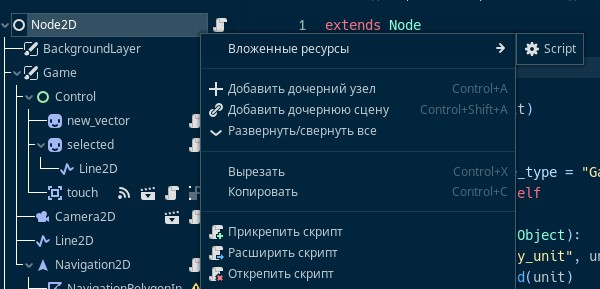
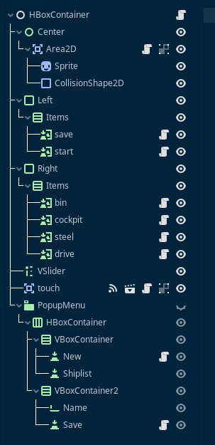
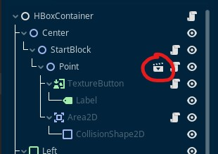
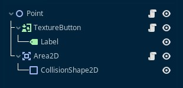

Язык GDScript используется для написания скриптов в игровом движке Godot
Скрипт в Godot не может существовать сам по себе. Он выполняется только в том случае если он прикреплён к какому-либо объекту
Объекты в Godot также называются нодами или узлами
Любая сцена представляет собой иерархию. Каждая сцена имеет корневую ноду.
У каждого узла в Godot есть родительская нода или сцена, за исключением корневого узла (root). Таким образом объекты образуют иерархическую структуру, как в файловой системе
Каждая нода имеет свой путь: root/название сцены/название ноды. С его помощью можно обращаться к любому объекту на сцене.
Помимо пути, также ноды имеют имя, при этом объекты могут называться одинаково, но при условии, что они не являются дочерними для одного и того же узла. Или же, важно, что бы пути до объектов не совпадали
Группы объектов образуют сцены и заготовки. Фактически заготовки — это тоже сцены, но как сцены они не используются. Заготовки используются для включения в другие сцены, в этом случае они становиться обычными узлами, но при этом сохраняют всю группу своих объектов
 Можно привести аналогию с файловой системой. Сцена – это папка, а узел – это файл. При этом узлы сами могут выступать в роли объекта
Также существуют глобальные скрипты – синглоты. Они запускаться вместе с запуском игры. Для синглота не требуется объект.
Также при запуске игры, первой запускается главная сцена. Она указывается в настройках проекта. Сцены можно переключать, внутри запущенной сцены можно создавать новые объекты. При переключении сцены, старая сцена удаляется, доступ к ней утрачивается и загружается новая сцена. При повторной загрузке сцены, она загрузится по новой